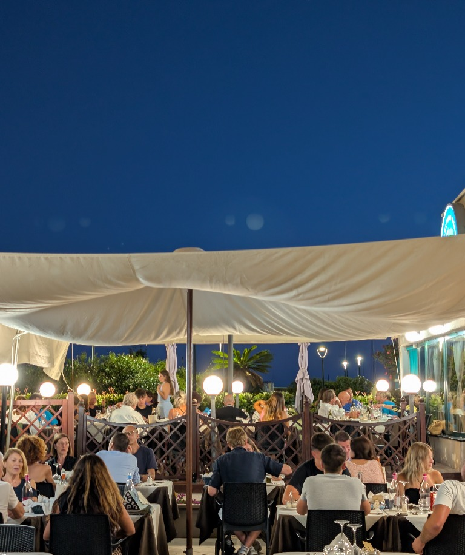

Una cena apprezzata per il buon cibo, il personale sorridente e il vino della casa; gli ospiti dicono che torneranno.
Una storia di mare
Un punto di riferimento a Lavagna, da tempo.
Il ristorante “Il Delfino Verde” sorge sulla passeggiata mare di Lavagna ben prima della costruzione del porto turistico. Da tempo è un punto di riferimento della cucina ligure, in particolare di pesce, in città.
Familiarità e cortesia vi accoglieranno nella nostra splendida veranda, dove gustare pesce freschissimo accompagnato da un calice di buon vino ligure.
Vi aspettiamo!

Dalla nostra cucina
Il mare, alla nostra maniera


1 / 2
Foto storiche


Recensioni Google
Le parole dei nostri ospiti
Alcune impressioni condivise pubblicamente su Google.
Valutazione media
4,4 / 5 538 recensioni su Google Google Leggi tutte le recensioni su Google ↗Valutazioni e conteggi rilevati a novembre 2026; possono variare. Le schede riportano sintesi, non citazioni letterali.
Giorno di chiusuraMartedì
Telefono+39 328 292 6782